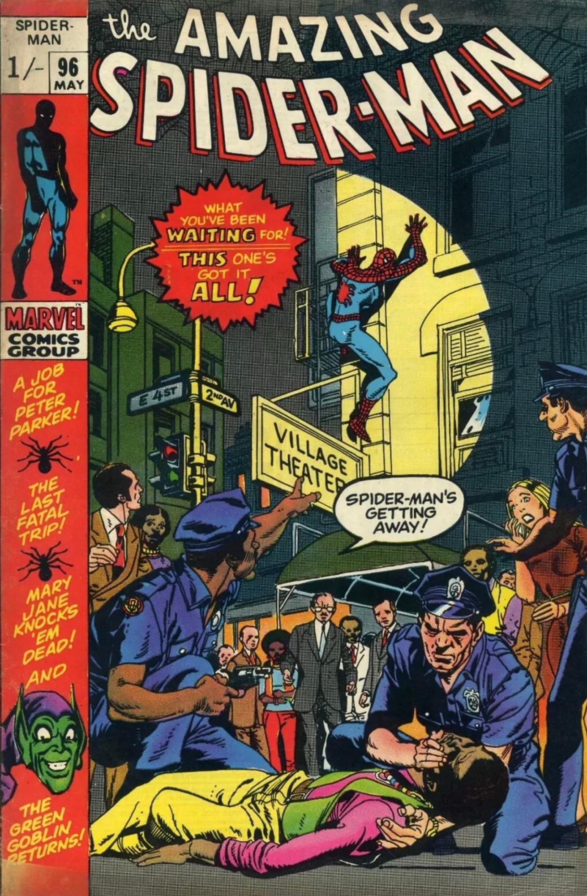

__________________________________________________________________________________
Bem-vindo à Marvel Station, um fansite para discussão sobre os quadrinhos da Marvel Comics!
O lugar onde realmente ocorrem as discussões sobre os quadrinhos é na página de discussões, porém sinto que uma introdução à história da empresa é pertinente para proporcionar aos meus leitores um entendimento maior de todo o contexto da Marvel. (E porque eu sou um grandissíssimo nerd)
O lugar onde realmente ocorrem as discussões sobre os quadrinhos é na página de discussões, porém sinto que uma introdução à história da empresa é pertinente para proporcionar aos meus leitores um entendimento maior de todo o contexto da Marvel. (E porque eu sou um grandissíssimo nerd)
__________________________________________________________________________________
Timely Comics
Tudo começa em 1939, durante a Era de Ouro dos quadrinhos. Action Comics #1 havia sido lançada no ano
anterior e deu início ao gênero de super-heróis, tornando-se um grande sucesso.
O mercado editorial americano da época tinha uma enorme demanda por histórias em quadrinhos
sobre super-heróis, e muitas editoras começaram a surgir para aproveitar esse sucesso.
O empresário americano Martin Goodman, vendo essa indústria em ascensão, decidiu se aventurar no mercado
editorial, fundando assim a Timely Comics. Em outubro de 1939, foi publicada a Marvel Comics #1.
A revista fez grande sucesso, e a editora começou a crescer rapidamente, passando a publicar
revistas de diversos gêneros, indo desde os clássicos super-heróis até histórias de terror.
Ao longo dos anos 40, a editora se destacou bastante, atingindo seu auge durante o período da
guerra.
Porém, após o fim da Segunda Guerra Mundial, o mercado de quadrinhos como um todo começou
a entrar em baixa, fazendo a indústria, antes em alta, decair rapidamente.

Altas Comics
Com a queda da popularidade dos quadrinhos, Martin Goodman tentou mudar o tipo de
revistas publicadas pela Timely. Super-heróis passaram a ser publicados cada vez menos,
e outros gêneros que estavam vendendo mais na época, como o terror e o romance, passaram a
ser os carros-chefe da empresa.
Para acompanhar essa mudança, Goodman mudou o nome da editora para Atlas Comics em 1951,
buscando se afastar do histórico de publicações de super-heróis.
Porém, à medida que outros gêneros, principalmente o terror, se tornavam os
quadrinhos mais vendidos da indústria, surgiu uma imagem negativa do mercado aos
olhos da sociedade conservadora americana, resultando na criação do Comics Code Authority (CCA)
em 1954, um “selo de aprovação” da Organização Americana de Revistas em Quadrinhos (OARQ).
O selo não era obrigatório, mas publicações que não o possuíam tinham uma
reputação ainda pior que o restante da indústria, que já havia adquirido uma péssima imagem,
a ponto de muitos quadrinistas sentirem vergonha de suas profissões.
As histórias dessa época são amplamente consideradas infantis e rasas, pois qualquer
tópico minimamente sensível era proibido pela OARQ.
O surgimento da Marvel
Em 1961, o escritor Stanley Martin Lieber, funcionário da Atlas Comics, havia decidido que se
demitiria da empresa. Por mais que possuísse paixão pelos quadrinhos, trabalhar com eles era algo
que lhe trazia constrangimento, tanto que ele nem mesmo usava seu nome para assinar seus trabalhos,
preferindo o pseudônimo Stan Lee. Como sua última publicação, ele decidiu escrever um quadrinho que
realmente gostasse.
As revistas da época eram marcadas por histórias muito infantis, focadas em aventuras simples
e com personagens extremamente arquetípicos e com pouquíssimos conflitos entre si.
Stan queria escrever uma história que fosse a antítese disso: uma história com
personagens em constante conflito uns com os outros, que não fossem simplesmente arquétipos,
mas que parecessem pessoas reais.
Como seu último quadrinho, Stanley escreveu *Fantastic Four #1*.
O quadrinho foi um grande sucesso. Os personagens eram mais ricos e complexos que todas as
outras publicações da época, tornando-se a revista mais vendida da Atlas em anos.
Com esse grande sucesso, Stanley abandonou a ideia de sair da empresa e se tornou sua principal
mente criativa. Ele foi responsável pela criação de diversos personagens icônicos, como o Homem-Aranha,
Thor, Homem de Ferro, os X-Men, entre muitos outros.
Stanley foi aos poucos se tornando uma figura pública, a “cara” da Atlas, e o pseudônimo que
antes usava por vergonha de sua profissão acabou se tornando um nome icônico.
Como o nome Atlas havia sido adotado para que a empresa se afastasse se suas origens com super-heróis,
agora que eles voltaram a ser o carro chefe da empresa, outra mudança de nome se mstrava nescessária.
Assim, para referenciar o início da história da compania, a empresa recebeu o Nome de Marvel Comics, assim
como sua primeira revista.

O fim do Comics Code Authority
Ao longo dos anos, a Marvel continuou fazendo sucesso e expandindo seu universo, com cada vez
mais personagens e grupos icônicos, como o Doutor Estranho e os Vingadores.
Porém, um dos maiores limitadores da editora era o Comics Code Authority, que constantemente
bloqueava histórias e impedia escritores e artistas de desenvolverem plenamente suas ideias e
narrativas.
O descontentamento dos autores com o selo continuou durante toda a década de sessenta e chegou
ao limite em 1971, quando a OARQ se recusou a dar o selo à nonagésima sexta edição de Amazing Spider-Man,
título principal do personagem mais popular da editora.
Na história, Peter Parker tentava ajudar seu amigo Harry Osborn, que estava se viciando em LSD. A
publicação buscava conscientizar os leitores sobre os perigos do uso de entorpecentes e mostrar suas
consequências negativas na vida das pessoas.
Mesmo assim, ela não se encaixava dentro dos padrões do Comics Code Authority, por mostrar,
ainda que negativamente, o uso de drogas.
Assim, com permissão de Martin Goodman, Stan Lee publicou a edição sem o selo, sendo
a primeira publicação da empresa em 17 anos a sair sem a aprovação do CCA.
A revista foi bem recebida pelo mercado, mostrando que a imagem negativa dos quadrinhos para o público
havia desaparecido. Assim, a Marvel como um todo abandonou o Comics Code Authority, passando a ter muito
mais liberdade criativa para seus escritores e desenhistas.

A explosão da bolha dos anos 90
O sucesso da Marvel continuou crescendo nos anos após o abandono do Comics Code Authority. Em 1975,
foi lançada a revista Giant-Size X-Men #1, que iniciou uma fase de enorme sucesso para os mutantes,
tornando-os alguns dos personagens mais populares da editora.
O sucesso do grupo persistiu durante a década de 80, período no qual a Marvel começou a adotar uma
nova estratégia de marketing: as capas variantes.
Múltiplas versões de uma mesma revista eram lançadas, algumas especialmente raras e muito procuradas
por colecionadores. A tática funcionou extremamente bem entre o final dos anos 80 e o início dos anos 90,
quando um de seus exemplos mais famosos foi lançado: X-Men #1, de Jim Lee. A revista possuía cinco edições
diferentes: quatro versões, chamadas capas A, B, C e D, cada uma representando um quarto de uma única imagem,
enquanto a quinta edição, especial para colecionadores, tinha uma capa dobrável reunindo todas as quatro.
A revista não foi apenas um sucesso para a época, mas sim o maior sucesso que a indústria já havia visto,
vendendo 8 milhões de cópias e tornando-se a revista em quadrinhos mais vendida de todos os tempos.

Por mais que a estratégia tenha passado anos sendo um grande sucesso, eventualmente o mercado se tornou
saturado.
A editora estava produzindo tantas cópias da mesma revista que, com o tempo, as lojas não foram capazes de
vender todas.
O público ficou cansado de comprar a mesma revista múltiplas vezes para propósitos de coleção e, assim, os
vendedores
acabaram ficando com milhares de revistas não vendidas.
A queda nas vendas foi rápida e repentina, a ponto de a empresa entrar em falência devido ao declínio.
Esse teria sido o fim da Marvel Comics; porém, a empresa conseguiu se reestabelecer por meio da venda dos
direitos
cinematográficos de seus personagens para estúdios de cinema, como a Fox, que adquiriu os direitos do
Quarteto Fantástico e dos X-Men; a Sony, que se tornou responsável pelos filmes do Homem-Aranha; e a
Universal, que adquiriu os direitos do Hulk.
O universo cinematográfico e a Disney
Após a venda dos direitos cinematográficos de seus personagens, múltiplos filmes de sucesso
foram lançados, como X-Men (2000). A Marvel, até então atuando apenas como uma editora, viu o potencial
de seus personagens nos cinemas e decidiu tentar produzir seus próprios filmes.
Porém, tendo vendido os direitos de seus personagens mais populares da época (Homem-Aranha
e os X-Men), a empresa não tinha opção senão trabalhar com personagens menos conhecidos.
Assim, foi lançado o filme Homem de Ferro em 2008. Apesar de o personagem ser relativamente desconhecido
na época, o filme foi um grande sucesso de bilheteria, rivalizando com os filmes dos X-Men da Fox e do
Homem-Aranha
da Sony.
O sucesso do filme chamou a atenção da Disney, que, buscando expandir seu catálogo de propriedades
intelectuais e alcançar novos públicos, decidiu comprar a Marvel. A aquisição ocorreu em 2009 e custou à
Disney
4 bilhões de dólares.

Dias Atuais
A Marvel, hoje em dia, é um dos maiores gigantes do entretenimento moderno. Seja por meio dos quadrinhos
ou dos filmes, ela está presente na vida da maioria das pessoas.
Seus personagens icônicos e histórias emocionantes fazem parte da vida de inúmeros fãs ao redor do
mundo,
tornando-a uma empresa lendária e marcante.